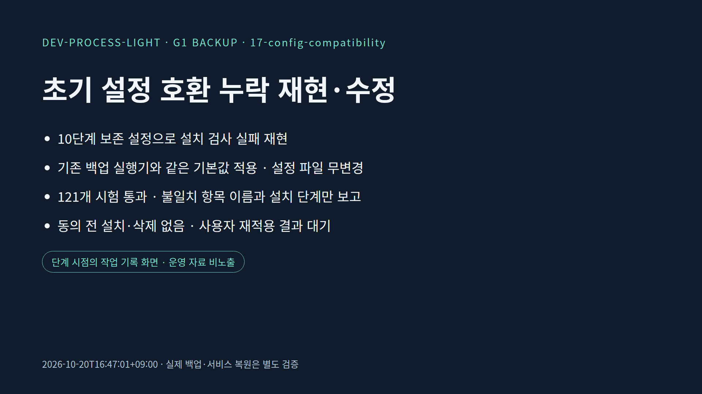
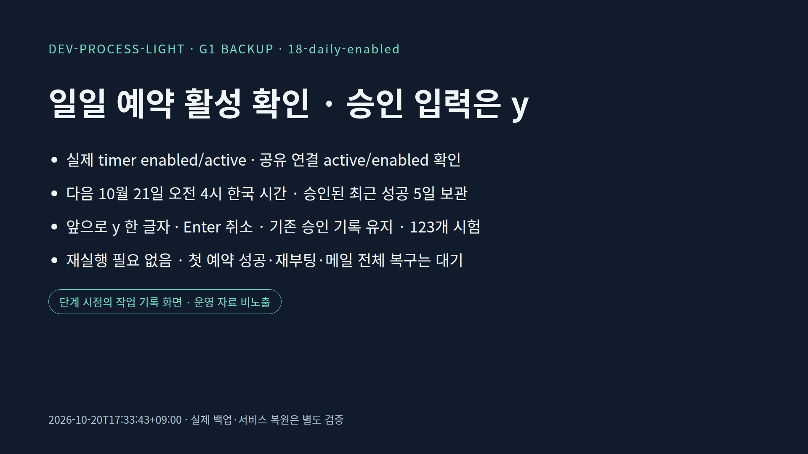

INTRO · DEV-PROCESS-LIGHT
dev-process-light × smb-backup-lab
요구 정리부터 오류 재현·백업·복구 확인까지
smb-backup-lab · 제작 기준 2026.10.20 · 검증 범위는 대본에 명시
INTRO · DEV-PROCESS-LIGHT
smb-backup-lab · 제작 기준 2026.10.20 · 검증 범위는 대본에 명시
WHY · DEV-PROCESS-LIGHT
smb-backup-lab · 제작 기준 2026.10.20 · 검증 범위는 대본에 명시
FRAMEWORK · DEV-PROCESS-LIGHT
smb-backup-lab · 제작 기준 2026.10.20 · 검증 범위는 대본에 명시
FRAMEWORK · DEV-PROCESS-LIGHT
| 시작과 합의 | 확인과 공유 | 이어가기와 복구 |
|---|---|---|
| light-resume 이전 기록 읽기 | light-check 직접 확인하기 | light-portal 기록 한눈에 보기 |
| light-start 작업 카드 만들기 | light-save 기록하고 Git 저장 | light-undo 확인받고 되돌리기 |
| light-manual · 사용설명서와 강의 대본을 함께 고치기 | ||
smb-backup-lab · 제작 기준 2026.10.20 · 검증 범위는 대본에 명시
FRAMEWORK · DEV-PROCESS-LIGHT
smb-backup-lab · 제작 기준 2026.10.20 · 검증 범위는 대본에 명시
PLAN · DEV-PROCESS-LIGHT
✓ 매일 한 번 · 성공한 최근 5일 보관
✓ 프로젝트별 파일 · SSH와 터널 설정 포함
✓ 메일 서비스 계속 실행 · 비밀은 Git 밖
✓ 별도 환경에서 복구를 실제로 확인
smb-backup-lab · 제작 기준 2026.10.20 · 검증 범위는 대본에 명시
PLAN · DEV-PROCESS-LIGHT
smb-backup-lab · 제작 기준 2026.10.20 · 검증 범위는 대본에 명시
PROCESS · DEV-PROCESS-LIGHT
smb-backup-lab · 제작 기준 2026.10.20 · 검증 범위는 대본에 명시
BACKUP · DEV-PROCESS-LIGHT
smb-backup-lab · 제작 기준 2026.10.20 · 검증 범위는 대본에 명시
BACKUP · DEV-PROCESS-LIGHT
smb-backup-lab · 제작 기준 2026.10.20 · 검증 범위는 대본에 명시
BACKUP · DEV-PROCESS-LIGHT
smb-backup-lab · 제작 기준 2026.10.20 · 검증 범위는 대본에 명시
CASE 01 · DEV-PROCESS-LIGHT
smb-backup-lab · 제작 기준 2026.10.20 · 검증 범위는 대본에 명시
CASE 02 · DEV-PROCESS-LIGHT
서비스 중단 없이 수집
기존 중단 경로 제거
온라인 export 검사
운영 상태 전후 비교
smb-backup-lab · 제작 기준 2026.10.20 · 검증 범위는 대본에 명시
CASE 02 · DEV-PROCESS-LIGHT
smb-backup-lab · 제작 기준 2026.10.20 · 검증 범위는 대본에 명시
VERIFY · DEV-PROCESS-LIGHT
smb-backup-lab · 제작 기준 2026.10.20 · 검증 범위는 대본에 명시
VERIFY · DEV-PROCESS-LIGHT
첫 암호화 성공본
격리 복원·읽기 확인
격리 읽기 확인
smb-backup-lab · 제작 기준 2026.10.20 · 검증 범위는 대본에 명시
RECOVERY · DEV-PROCESS-LIGHT
smb-backup-lab · 제작 기준 2026.10.20 · 검증 범위는 대본에 명시
CASE 03 · DEV-PROCESS-LIGHT

smb-backup-lab · 제작 기준 2026.10.20 · 검증 범위는 대본에 명시
CASE 04 · DEV-PROCESS-LIGHT
smb-backup-lab · 제작 기준 2026.10.20 · 검증 범위는 대본에 명시
OPERATE · DEV-PROCESS-LIGHT

smb-backup-lab · 제작 기준 2026.10.20 · 검증 범위는 대본에 명시
DEMO · DEV-PROCESS-LIGHT
1. README의 dev-process-light 적용 흐름
2. lecture.html에서 P = 발표 · N = 대본
3. 공개 진행 카드와 그 단계의 설명 보기
smb-backup-lab · 제작 기준 2026.10.20 · 검증 범위는 대본에 명시
DEMO · DEV-PROCESS-LIGHT
python3 -m unittest discover -s tests -v
합성 암호화·복원·승인 경계 시험
운영 백업·서비스 제어·실제 키 입력은 실행하지 않음
smb-backup-lab · 제작 기준 2026.10.20 · 검증 범위는 대본에 명시
TAKEAWAY · DEV-PROCESS-LIGHT
smb-backup-lab · 제작 기준 2026.10.20 · 검증 범위는 대본에 명시
CLOSING · DEV-PROCESS-LIGHT
요구 → 코드 → 실행 증거 → 다음 작업
smb-backup-lab · 제작 기준 2026.10.20 · 검증 범위는 대본에 명시
Q&A · DEV-PROCESS-LIGHT
| 질문 | 이번 사례의 답 |
|---|---|
| 다른 저장소도 지원하나요? | 현재 구현 대상은 SMB 공유입니다. |
| 서버 전체를 바로 부팅하나요? | OS 재설치 후 설정·데이터 복원이 목표입니다. |
| 메일 전체 복구를 끝냈나요? | SQLite·우편함 읽기 확인, 전체 로그인/송수신은 별도입니다. |
| 실패한 날 이전 성공본을 지우나요? | 새 성공 검증이 없으면 보관 정리를 하지 않습니다. |
smb-backup-lab · 제작 기준 2026.10.20 · 검증 범위는 대본에 명시